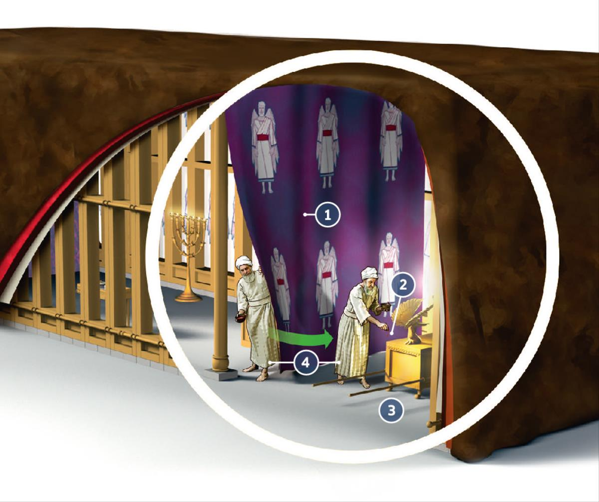

The tabernacle foreshadowed the arrangement that God set up for the atonement of mankind’s sins through the ransom. Match the following four aspects of the tabernacle with what they pictured.

The curtain
Sprinkling the blood of an animal sacrifice before the Ark